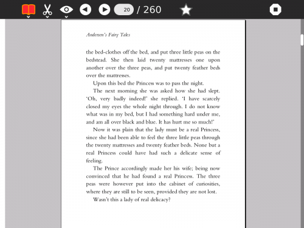
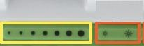

Read
About
The Read activity allows the laptop to act as a book reader. It has a simple interface, and will view many kinds of text and image-based book-like materials. It will have particular strengths in handheld mode, with extremely low power consumption and simple navigation controls.
Read can read PDF files, EPUB files, text files and single-page TIFF files.
Using
The Read activity is launched by opening the Journal and choosing a PDF document. PDFs downloaded from Browse can be opened in this way, as can PDFs on an external storage device. The user may also start Read from the Home page Favorites circle and select a file to read.
The book opens in a portrait orientation.

Navigation
When the screen is in the upright position, the keyboard is available for navigation as well as the directional pad and games keys. When the screen is in tablet mode, the keyboard is not available. Make sure the document canvas is selected (and not the tool-bar menu) by clicking either in the page area, or pressing the TAB key until focus moves out of the toolbar.
Keyboard Navigation:
The arrow keys will scroll the page a few lines in any direction
ALT + arrow keys, or screen direction pad, will scroll the page a small amount in any direction
FN + arrow keys up/down will move one page up or down (with a small overlap to keep context)
FN + arrow keys right/left will jump to the start or end of the document
The keys h, j, k, l also act as left, down, up, right
Screen GamePad and Directional Button Navigation
The screen rotation key (the bottom key on the left side of the screen) will turn the screen image to accommodate tablet use.
The directional pad on the left hand side of the screen will also scroll a few lines
On the right hand side of the screen the gamepad buttons ‘circle’ and ‘cross’ also act as page up and page down (with a small overlap to keep context).
The gamepad buttons ‘square’ and ‘tick’ act as a zoom in and zoom out
Brightness Control
The brightness can be increased or decreased with the keys
Clarity is improved in tablet mode (turning the screen and laying it flat) by using monochrome mode. Select CTRL + Brightness keys to turn it on or off.
Monochrome outside is easier to view books (CTRL Brightness Down)

Note
Be aware that large books may open and scroll slowly.
Applying
The GetBooks Activity provides a way to expand access to many of the free books available worldwide. The ‘Documents’ folder appears at the bottom of the screen when you are using Journal. Books can be stored in the Documents folder for easier cataloging.